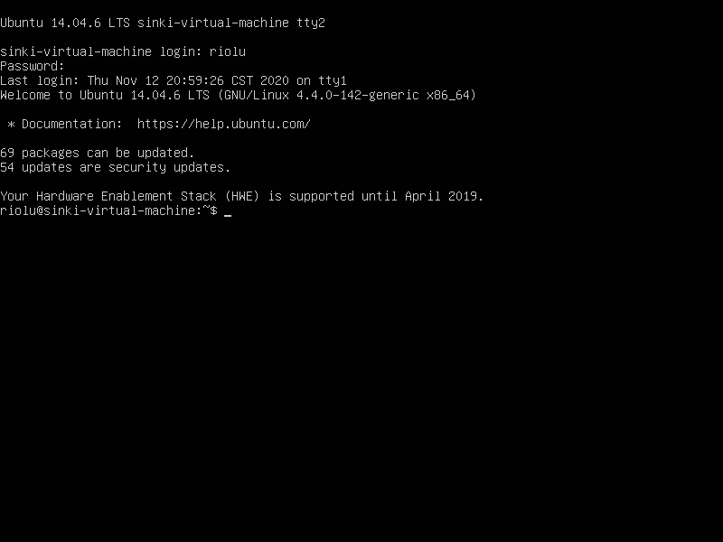
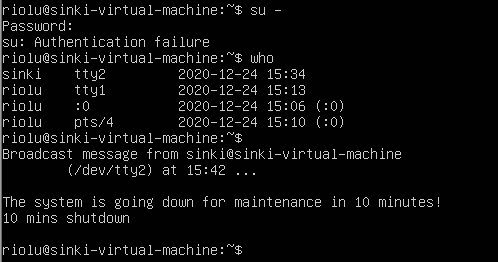
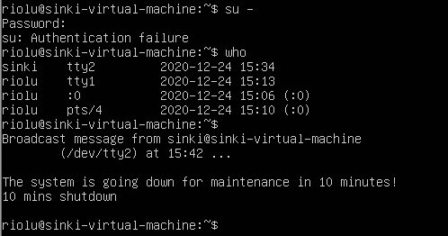

- 登入系统 -
接下来就用 Ubuntu14 进行实验啦，先设置一下桌面配置，建个普通用户，密码 wodemima！
关闭桌面动画：
$ gsettings set org.gnome.desktop.interface enable-animations false

用普通用户可以防止手残（ctrl+alt+prScrn 截图保存到主机桌面
# Ch4 登入与帮助
ctrl+alt+F1~6 切换终端， ctrl+alt+F7 图形界面。终端界面登入后是这样：
注销指令： exit
更改为英文语系：
$ LANG=en_US.utf8 //输出讯息改为英文
$ LANGUAGE=en_US.utf8
$ export LC_ALL=en_US.utf8 //其他信息
注意 LANG=en_US.utf8 是连续输入的，等号两边并没有空格符喔！ 这样一来，就能够在『这次的登入』察看英文讯息啰！如果注销 Linux 后，刚刚下达的指令就没有用啦！可以用 locale 查看。
所以要怎样才能永久生效呢？
如果想要让系统默认的语系变成英文的话，那么可以修改系统配置文件 /etc/locale.conf ，使 LANG 这个变量成为上述的内容即可。
# 命令输入：
一般格式为 command [-options] parameter1 parameter1 …
\ 后敲回车表示换行接着输入命令
选项设定（如帮助） -h 缩写， --help 完整名称。
某些情况选项也用 + 引导。
举例：
$ date +%Y/%m/%d //查看日期
$ cal [month] [year] //查看日历
$ bc //计算器 scale=num设置小数点位数，quit退出
快捷键：
- Tab 键： 输入部分命令连按两次 Tab，可以文件补齐或命令补全或参数 / 选项补齐。
- ctrl+c： 终止正在运行的程序
- ctrl+d： 键盘输入结束（End Of File, EOF 或 End Of Input），可以取代
exit。 - shift+Page UP/Page Down： 翻页
# manual
使用命令 man xxx 可以查看 xxx 的用户手册，查看更详细的说明。
第一行命令右面的数字代号代表含义，比较重要的是
| 代号 | 代表内容 |
|---|---|
| 1 | 用户在 shell 环境中可以操作的指令或可执行文件 |
| 5 | 配置文件或者是某些文件的格式 |
| 8 | 系统管理员可用的管理指令 |
另外可以套娃使用命令 man man 查看更多……
man page 常用的按键
| 按键 | 进行工作 |
|---|---|
| 空格键 | 向下翻一页 |
| [Page Down] | 向下翻一页 |
| [Page Up] | 向上翻一页 |
| [Home] | 去到第一页 |
| [End] | 去到最后一页 |
| /string | 向下搜寻 string 这个字符串，如果要搜寻 vbird 的话，就输入 /vbird |
| ?string | 向上搜寻 string 这个字符串 |
| n, N | 利用 / 或？来搜寻字符串时，可以用 n 来继续下一个搜寻 (不论是 / 或？) ，可以利用 N 来进行『反向』搜寻。 举例来说，我以 /vbird 搜寻 vbird 字符串， 那么可以 n 继续往下查询，用 N 往上查询。若以？vbird 向上查询 vbird 字符串， 那我可以用 n 继续『向上』查询，用 N 反向查询。 |
| q | 结束这次的 man page |
man page 的数据放在 /usr/share/man 这个目录里头，修改 /etc/manpath.conf 可以改变搜寻路径。
man -f xxx 查找指令 (或文件) 的简易说明，括号里的是代号。
man 代号 xxx 显示对应代号指令 (或文件) 的手册，没有代号时显示查找到的第一个。
man -k xx 查找信息中含有 xx 的所有指令说明。
另外，root 模式下执行 mandb 可以建立 whatis 数据库，这样就能用
whatis xxx 替代 man -f xxx ，
apropos xxx 替代 man -k xxx 。
# info
info 与 man 的用途差不多，但是 info page 将文件数据拆成一个一个的段落，每个段落用自己的页面来撰写，并且在各个页面中还有类似网页的 “超链接” 来跳到各不同的页面中。支持 info 指令的文件默认是放置在 /usr/share/info/ 这个目录当中的。
| 按键 | 进行工作 |
|---|---|
| 空格键 | 向下翻一页 |
| [Page Down] | 向下翻一页 |
| [Page Up] | 向上翻一页 |
| [tab] | 在 node 之间移动，有 node 的地方，通常会以 * 显示。 |
| [Enter] | 当光标在 node 上面时，按下 Enter 可以进入该 node 。 |
| n | 前往下一个 node 处 |
| p | 前往上一个 node 处 |
| u | 向上移动一层 |
| s(/) | 在 info page 当中进行搜寻 |
| h, ? | 显示求助选单 |
| q | 结束这次的 info page |
# doc
有相当多的说明需要额外的文件（How-To）在 /usr/share/doc 这个目录里。
# nano
启用： nano filename
下面两行为帮助。 ^ 代表 Ctrl 组合键， M 代表 Alt 组合键。回车键确认。
# 关机相关
who ：查看当前在线用户。
sync ：将数据同步写入硬盘。在关机指令前手动下达可以加层保障。
su - ：转为 root。不过我失败了。
shutdown ：关机。用法： sudo shutdown \[-krhc\] \[时间\] \[警告讯息\]
选项与参数：
-k： 不要真的关机，只是发送警告讯息出去吓唬人。-r： 在将系统的服务停掉之后就重新启动 (常用)-h： 将系统的服务停掉后，立即关机。 (常用)-c： 取消已经在进行的 shutdown 指令内容。- 时间 ： 指定系统关机的时间，无参数则默认 1 分钟后自动进行。可以为
now（立即关机，相当于 0），HH:MM（当天时间，若已过去则为隔天），+整数X（X 分钟后关机）。
 

reboot ：重启。
poweroff ：关机，切断电源。
halt ：系统停止，屏幕可能会保留停止信息。
systemctl suspend ：休眠模式。
下一篇：文件权限与目录配置
上一篇：反复入门 Linux